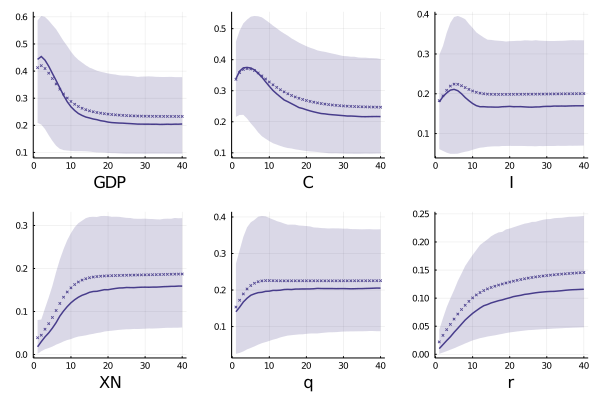
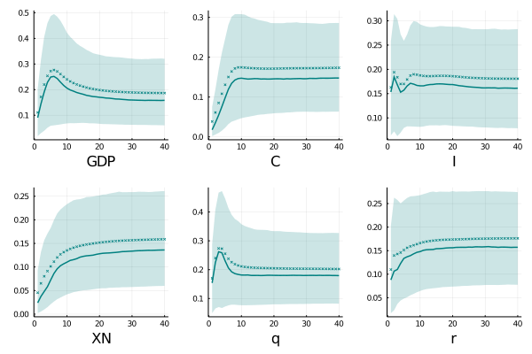

Global shocks ....
With an initial contribution around 25 and 23 percent on output and investment fluctuations, global shocks shows an increasing path over the first 2 years achieving a participation around 45 percent for these aggregates and 34 percent on consumption. These results are reduced close to 25 percent, and 30 percent respectively (with 22 percent on consumption). The impact of fundamental global shocks exhibits a hump shape reflecting not only the persistent nature of the shock but also a "slow" adjustment in the economy.
On the other hand, global shocks explains near 18 percent of interest rate volatility raising rapidly (the first quarter pass from 9 to 16 percent) after the fundamental shock hits. In contrast, the effect over real exchanges rates are close to be constant suggesting small frictions in the international trade in this country. A remark to do is that effective exchange rates are more related to fundamental shocks in the short and long run (it could be explained by higher movements in the spot market and not in the future one, but we lack of data to make this statement).
The previous results, including the fact that the consumption and trade balance channels are small in the short run indicates that ....
 Fundamental global conditions impact on macro aggregates for the Brazilian economy is close to 20 percent in the long-run for output, consumption, and effective exchange rate; while, around 11-16 percent in the rest of variables. At difference with Argentina, the dynamic of does not present a hum shape in the first two variables. Instead, the impact is higher in the short run and medium run (44 and 33 percent at the same period and close to 30 percent after 2 years),
On the other hand, monetary policy response is the smallest (in the long run) among the analysed economies with a explanation power near to 12 percent, and below two digits in the first three years. Another particularity of Brazilian economy is that effective exchange rate displays being determined between 14-20 percent in the whole horizon achieving 18 percent during the first year.
 The contribution of global shocks on Chile's production displays a clearly hump shaped pattern with an initial impact of 9 percents which promptly reaches its peak after 6 quarters decreasing until 15 percent in a long term. In the same horizon about 15 percent of consumption and investment fluctuations are driven by these shocks, however their dynamics are different; while the impact in the short run for consumption is small (with a peak after 8 quarters) , it is higher for investment contributing for 15 percent in the same shock period.
As in the Brazilian case, global shocks account for almost 18 percent of exchange rate variability in the first year, increasing slowly during next years to be stabilized around a 20 percent . Interest rates follows the same behavior as the rest of emerging countries. On the other side, the response of trade balance is slow but increasing over as the time pass achieving a share around 15 percent after two years.
 The long run effect of global innovations on Colombian macro aggregates are
around one third of its output fluctuations, and near to 42 of investment variability
being explained by them, while they accounts for one quarter on consumption.
The dynamics of this contributions shows an hump shape
with their maximum in the neighborhood of the sixth quarter - close to 60 percent (later I will show if these
results are stable). The contribution on investment is the highest among
the emerging economies studied reaching at maximum level around 63 percent. This result
could be reflecting the high concentration of their trade on crude oil (near 45 percent
), and at difference with Chile (70 percent of their exports is cooper) the low
relevance of the Chinese economy in the petroleum market made that investor took more
into consideration world movements. It is echoed in the impact on trade which achieved
50 percent after one year and 34 after a decade.
The long run effect of global innovations on Colombian macro aggregates are
around one third of its output fluctuations, and near to 42 of investment variability
being explained by them, while they accounts for one quarter on consumption.
The dynamics of this contributions shows an hump shape
with their maximum in the neighborhood of the sixth quarter - close to 60 percent (later I will show if these
results are stable). The contribution on investment is the highest among
the emerging economies studied reaching at maximum level around 63 percent. This result
could be reflecting the high concentration of their trade on crude oil (near 45 percent
), and at difference with Chile (70 percent of their exports is cooper) the low
relevance of the Chinese economy in the petroleum market made that investor took more
into consideration world movements. It is echoed in the impact on trade which achieved
50 percent after one year and 34 after a decade.
 Production Peruvian's exposure to global shocks are on par with Chilean results
in the medium horizon but they differ in long terms. It could be caused by
a difference in the transmission channels that lead to this point.
While for the former almost 30 percent of the economy variability is supported by movements
in global conditions being the trade channel and investment important ones (a contribution around 21 percent
in the long run); for the later, it looks not be the case since only 13 percent of the
trade balance and 16 percent of investment fluctuations are
related with global shocks, which drive just the a half regarding to the Peruvian case.
As before, the difference in exporting structure are critical to find a source of difference.
For the Peruvian economy although copper is the most important commodity, also gold is a
relevant player with a participation in exports around 30 percent, which is well know
to works almost as a financial asset, and following closely the global conditions.
Production Peruvian's exposure to global shocks are on par with Chilean results
in the medium horizon but they differ in long terms. It could be caused by
a difference in the transmission channels that lead to this point.
While for the former almost 30 percent of the economy variability is supported by movements
in global conditions being the trade channel and investment important ones (a contribution around 21 percent
in the long run); for the later, it looks not be the case since only 13 percent of the
trade balance and 16 percent of investment fluctuations are
related with global shocks, which drive just the a half regarding to the Peruvian case.
As before, the difference in exporting structure are critical to find a source of difference.
For the Peruvian economy although copper is the most important commodity, also gold is a
relevant player with a participation in exports around 30 percent, which is well know
to works almost as a financial asset, and following closely the global conditions.
 Among all the selected developing economies, global shocks have a high importance in the
fluctuation of interest rates, explaining near to 40 percent of them in the long run.
The rest of variables exhibit similar patterns than before, with
output volatility being explicated by 27 percent in the long run, while consumption
and investment report level aroun 18 percent.
Among all the selected developing economies, global shocks have a high importance in the
fluctuation of interest rates, explaining near to 40 percent of them in the long run.
The rest of variables exhibit similar patterns than before, with
output volatility being explicated by 27 percent in the long run, while consumption
and investment report level aroun 18 percent.
Global shocks ....
If you have any doubt, suggestions, or simply want to talk, you can contact with me.